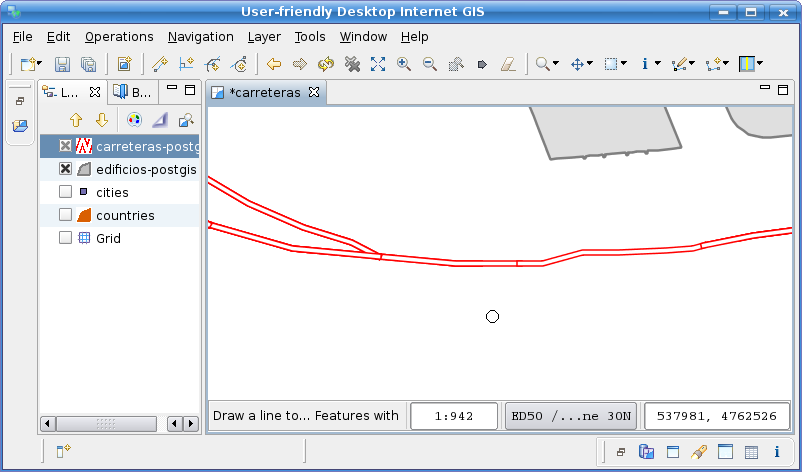

Split Tool
 Splits features crossed by a line string
Splits features crossed by a line string
The Split Tool performs the division of features into two or more using a line string drawn by the user as the splitting line.
Behaviour
The Split Tool operates upon the selected features of the current Layer. You can use the Bounding Box Selection tool or any other feature selection method, to limit the features to split prior to use the Split Tool. If the current layer has no selection set, the Split Tool will operate over any Feature in the current layer whose default geometry is crossed by the splitting line.
When the Split Tool proceeds to divide a feature, it will delete the feature being divided and create as many new features as parts the splitting results in.
Note that the Split Tool does not commits the result, but lets you undo the operation if desired, or commit the changes to the backend data repository as you would normally do in uDig.
Visual consistency
In order to preserve visual consistency, and thus be consistent with what the user is doing, the geometries created by the Split Tool will be first created in the Map's CRS, and then projected to the backend CRS for storage. This is to ensure the resulting geometries are cut following the line drawn by the user, as doing it the opposite way may lead to a different result if the map and the data CRS's differ.
Usage
Select the Split Tool from the drop down buttons list as shown in Figure 1.

Figure 1, selecting the Split Tool
Draw the line string to be used as the splitting line, making sure it crosses the geometries you want to divide, as shown in Figure 2.

Figure 2 draw split line to divide a LineString
Double click to add the last splitting line vertex and indicate the split operation to proceed.
Figure 3 shows how the LineString on the current layer that were crossed by the splitting line was divided in two.

Figure 3 LineString divided in two
The following is another example to split a polygon in various parts.
Figure 4 shows a splitting line being drawn over a previously selected polygon on the current Layer. The Table View shows the attribute data of the selected polygon.

Figure 4 splitting a selected polygon
Figure 5 shows the newly created polygons once the splitting line is finished and the split operation proceeded.

Figure 5 result of splitting a polygon
In Figure 6 you can see the newly created Features attribute data on the Table View, after selecting the resulting polygons with the _Bounding Box Selection tool. Note each of them have a new Feature ID as expected, and share the same attribute data of the original Feature.

Figure 6 new uncommited features created
{kind=link}